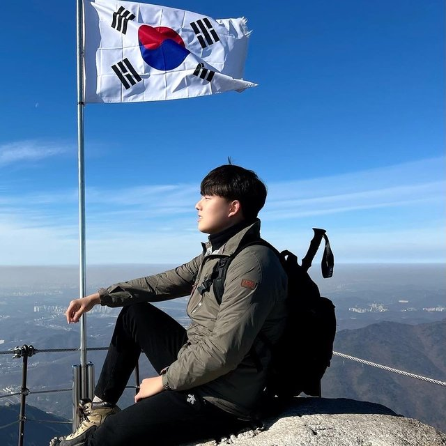

SHeRLoc: Synchronized Heterogeneous Radar Place Recognition for Cross-Modal Localization
IEEE Robotics and Automation Letters (RA-L), 2025
I am a first-year Ph.D. student in Mechanical Engineering at the RPM Robotics Lab, Seoul National University, advised by Prof. Ayoung Kim.
My research focuses on SLAM, sensor fusion, and robot perception with radar. Currently, I am working on radar-visual-inertial SLAM for quadruped robots in adverse conditions.
Previously, I was an undergraduate researcher at the IDIM Robotics Lab, SNU, advised by Prof. Sung-Hoon Ahn, working on vision-based collaborative robot automation and voice control with mobile robot arms.

IEEE Robotics and Automation Letters (RA-L), 2025
IEEE International Conference on Robotics and Automation (ICRA), 2025
International Journal of Robotics Research (IJRR), 2026 🏆 IJRR Paper of the Season Award (April–June 2026)
Dissertations
M.S. Thesis, Seoul National University, 2026
B.S. Thesis, Seoul National University, 2024 🏆 Outstanding B.S. Thesis Award
Academic timeline
Seoul National University
Dept. of Mechanical Engineering, advised by Prof. Ayoung Kim.
Seoul National University
Dept. of Future Automotive Mobility, advised by Prof. Ayoung Kim.
Technical University of Munich, Germany
Dept. of Mechanical Engineering.
Seoul National University
Undergraduate research advised by Prof. Sung-Hoon Ahn.
Research & industry
Sequor Robotics
Developed a pedestrian trajectory prediction algorithm.
SUM (Self-driving Startup)
Kalman filter-based localization, LiDAR-radar-vision object tracking, and CARLA scenario production.
IDIM Lab, Seoul National University
Built a voice-command collaborative robot system controlling a Doosan robot arm with ROS.
AI Semiconductor Engineering Lab, Seoul National University
Autonomous driving project; stereo vision and 3D mapping with a ZED 2i camera on ROS.
Hyundai America Technical Center, Inc.
Benchmarking and development projects across departments, including autonomous driving.
Recognition